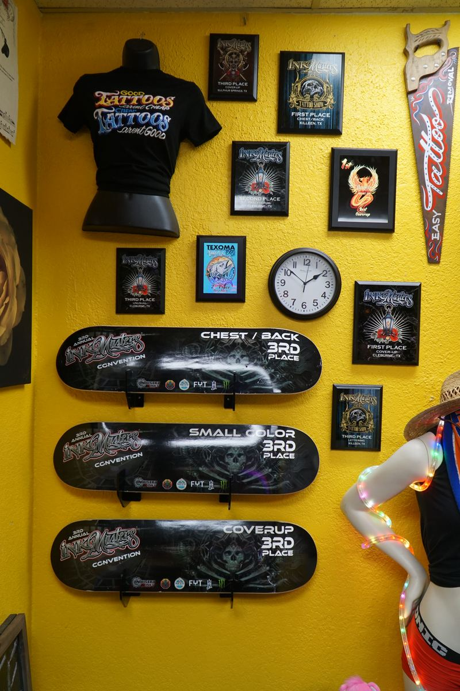

Award-Winning Artist

After years of tattooing in the DFW area, Dexter set up his own shop creating his ideal environment of surrounding himself with high quality work and artistry. No style is out of reach for Dexter so whether you're looking for a full color back piece or a small technical memorial piece, reach out and he's got you covered. Don't get stuck anywhere else.
A faded black & grey piece reworked into a full-color ocean half sleeve.
Book an appointment with Dexter today